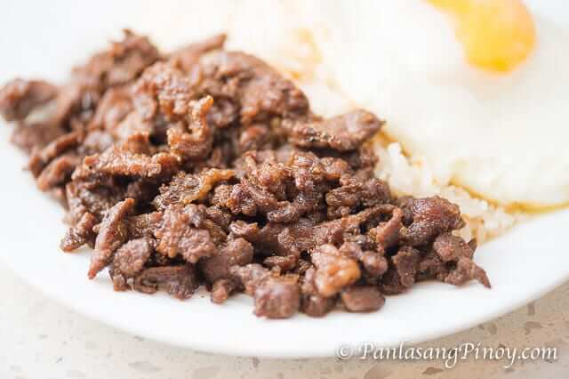

Beef Tapa

Ingredients
- 1 lb. thinly sliced beef steak
- 1 serving teriyaki sauce
- 2 cups garlic fried rice
- 2 eggs
- 3 tablespoons cooking oil
Steps
- Arrange the sliced beef in a medium bowl. Pour the teriyaki sauce in the bowl and then mix. Cover and refrigerate for at least 1 hour.
- Heat the cooking oil in a pan. Once the oil gets hot, put the beef in the pan including the marinade. Stir fry for 5 to 10 minutes or until the sauce completely evaporates.
- Cook the egg depending on your preference. See this post about ways on how to cook eggs.
- Arrange a cup of garlic fried rice in a plate along with the egg. Put half of the beef teriyaki tapa on the plate and then serve.
- Share and enjoy!
Back to top | Home